Quest Journal — ornate parchment
Report · Tests · Preservation
Loading local images…
Before
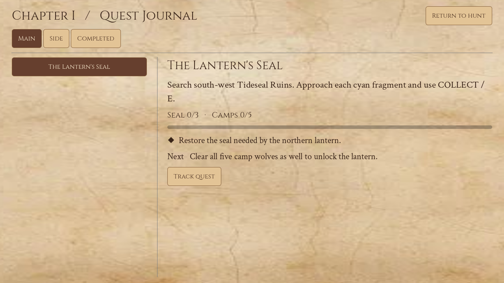
01 Opening
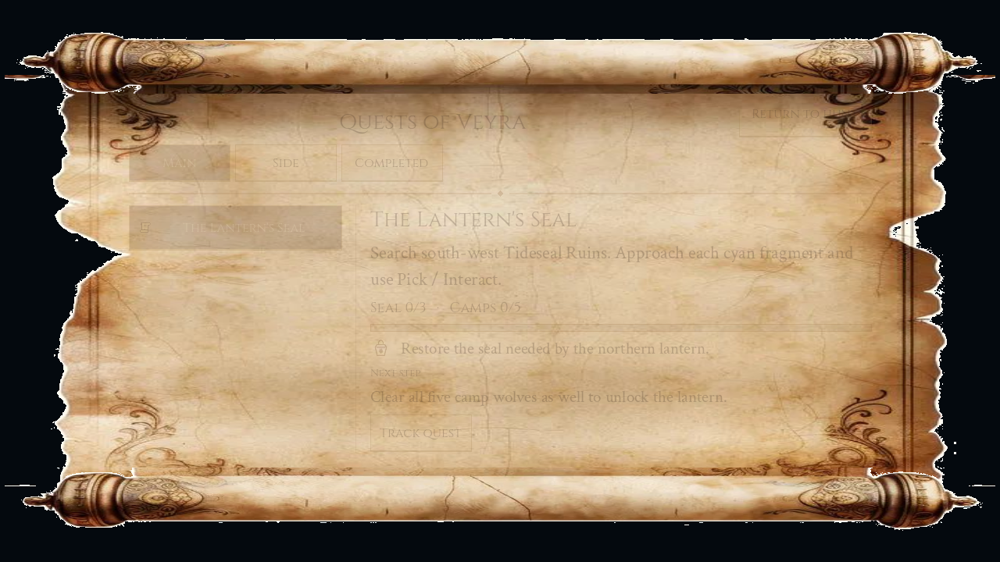
02 Main Android
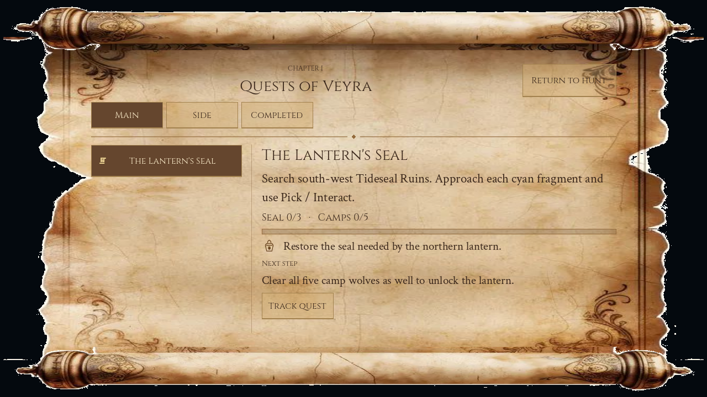
03 Side Reward
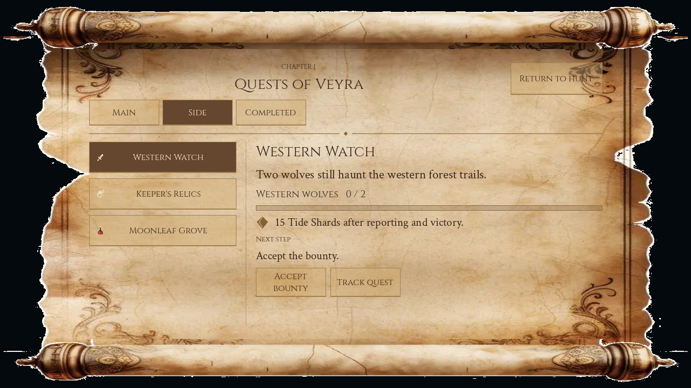
04 Tracked Relic
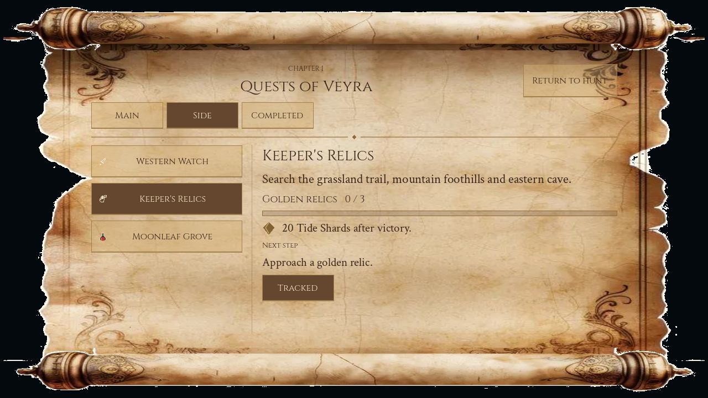
05 Closing Midpoint
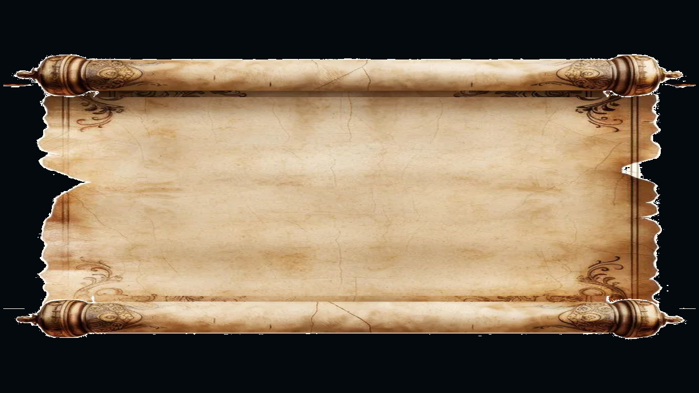
06 Tracked Hud
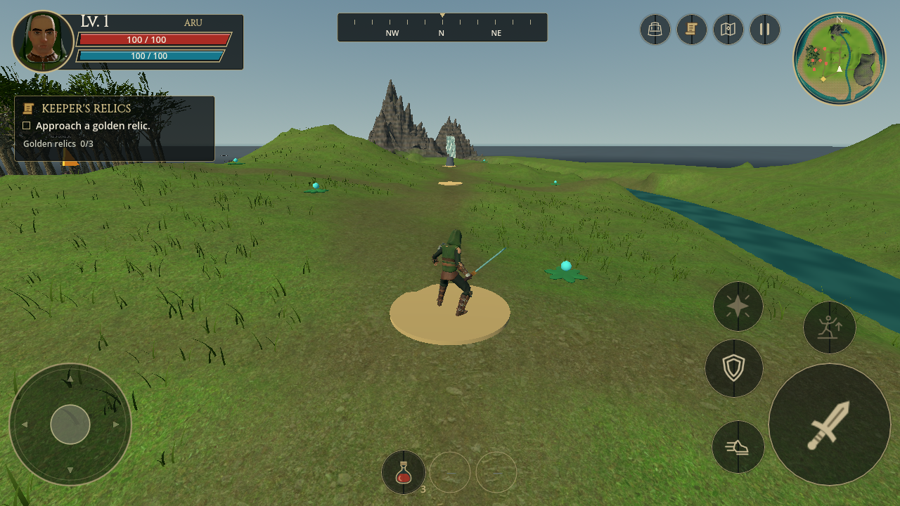
07 Completed Stamp
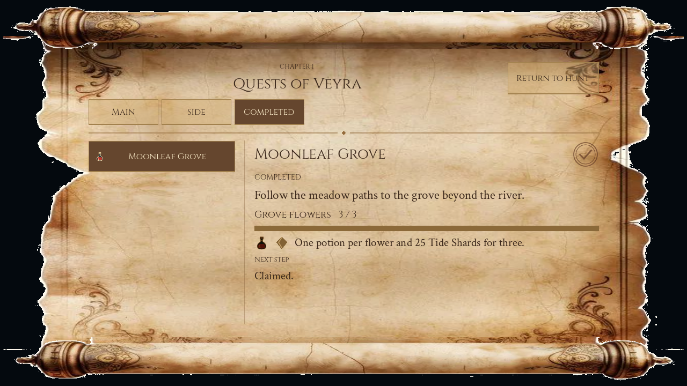
08 Main Selected
09 Bounty Secured
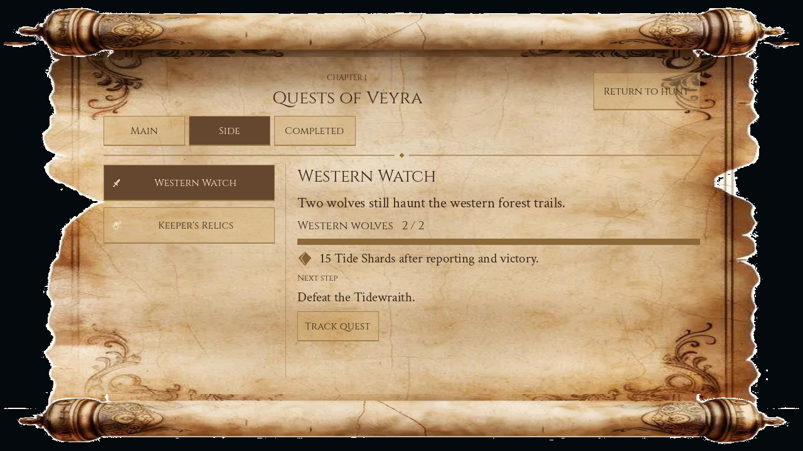
10 Small Safe Area
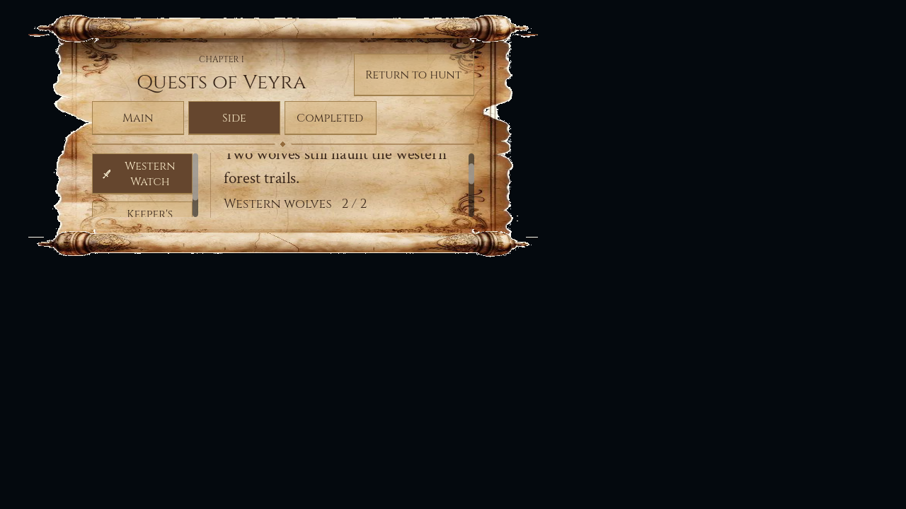
11 Reload Persistence
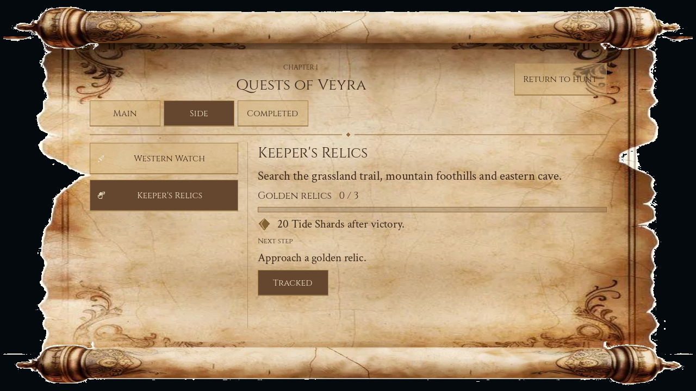
Layout 1600X720
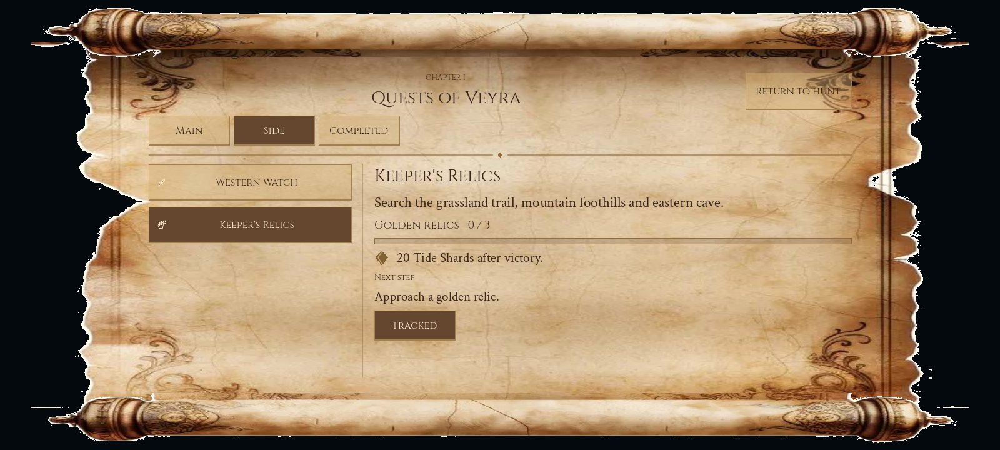
Layout 800X450
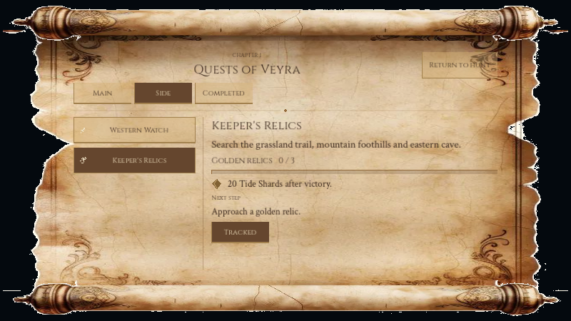